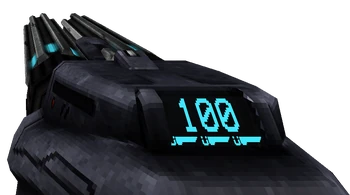
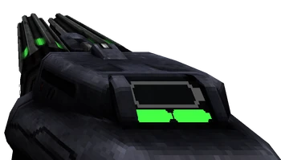

In ultrakill we have 2 NailGuns
The Attractor Nailgun is the blue variant of the Nailgun, obtained in the level [ 1-1: HEART OF THE SUNRISE ]. Holding primary fire will cause the Attractor Nailgun to start firing nails at a rapid rate, and pressing alt-fire will launch a nail magnet that attracts the fired nails.
The Overheat Nailgun is the green variant of the Nailgun, purchasable for 25,000P after obtaining the Attractor Nailgun in [ 1-1: HEART OF THE SUNRISE ]. Holding primary fire will cause the Overheat Nailgun to start firing nails at a fast constant rate. Pressing alt fire when the overheat meter has charge will spit out fiery nails in a rapid-fire burst, using up one of the Overheat Nailgun's charges.
